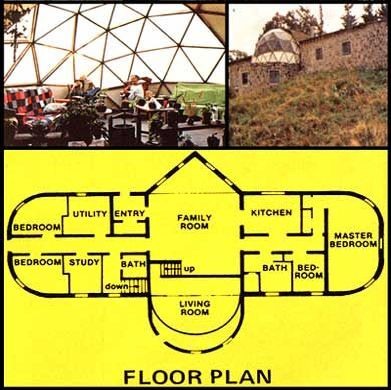
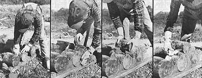

We Built A $75,000 House . . . For Only $10,000
By the Mother Earth News editors
May/June 1977
"It's The Answer to low-cost housing!" That's what Jack Henstridge (who designed and built the distinctive four-bedroom home shown here) has to say aboutstackwood construction . . . an age-old building method that allows anyone with [1] a supply of firewood-sized chunks of lumber and [2] some lime mortar to erect a good-looking, comfortable dwelling for less than $4.00 per square foot.
Times were tough-really tough-for our family three years ago. In rapid succession, I was laid off from a good-paying job as a company pilot, our house burned down, and our VW van-which had exceeded its warranty's mileage limitation by a mere 27 miles-swallowed a valve, leaving the engine a shambles.
Our situation reminded me of that old joke in which the man from the collection agency calls and says that unless you pay up, he's "going to make trouble for you". We were so hard up that if the collections guy had called us, we could have given him the classic punch line: "You are going to make trouble for us?"
SO MUCH FOR THE BAD NEWS
On the bright side, we did manage to collect $8,000 in fire insurance money (thanks to my wife, Helen, who had remembered to pay the premium a month before the Big Blaze). And I had plenty of free time on my hands to design-and build-a replacement for the charred remains of our home.
Whether we could buy food out of that $8,000 and have enough cash left over to finance the construction of something more substantial than a fancy two-seater outhouse was another question, however. And yet our dwelling would have to be fairly substantial to withstand the four-foot accumulations of snow and minus-40° weather that are common here (in Oromocto, New Brunswick) during the winter.
I began to think. Has anyone ever built a house here without money and survived? Certainly . . . the early settlers did. What kind of shelter did they build? Log cabins, of course. "Great," I said to myself. "That's the kind of shelter we'll construct!"
HOMEWORK TIME
Without further ado, I began to study up on log construction. I researched materials and methods, visited old log buildings that had been restored, made sketches, and at the same time-began to cut down the trees we would use for our log dwelling.
While checking out the old log cabins, however, I noticed one thing that many of them had in common: The roof-sooner or later-fell in. I noticed, too, that around the bottoms of many of the oldest structures-where the timbers rested on the earth-the wood had begun to rot. Because of these observations, I vowed [1] to build a strong roof over our dwelling and [2] to keep our home's logs from touching the ground at any point. (I decided to take care of the first potential problem by designing a gambrel roof . . . and the second by constructing our new house on a concrete slab foundation.)
A SHIP WITH WINGS
What I wanted to do was to create a very modernistic dwelling using extremely old methods of construction. Also, I wanted the house to tell a story . . . to serve as a sort of live-aboard sculpture.
As strange as it may sound, I ultimately decided (because of my lifelong interests in sailing and aviation) to build a ship with wings. The central living area of the house would have the floor plan of an oceangoing vessel, except that the ship would be upside down so that its keel would actually be our gambrel roof. (The "front" of the living area would be pointed-like the bow of a ship while the rear would feature an observatory consisting of half a geodesic dome.) To each side of the inverted vessel we'd then add wing like extensions containing our bedrooms, baths, kitchen, study, and utility area. And, for the sake of economy, we'd cover the "wings" with a sod roof. All of this is shown in the accompanying illustrations.
STACKWOOD CONSTRUCTION
We felled the trees for our house in April of 1974 and had the giant (50' to 60' long) timbers trimmed, peeled, and racked by the following summer. Come September, however, we hit a snag: The Canadian Army (on whose land our logs were stored) refused our entry to the forest on the only day we had a truck large enough to haul the big timbers away. We ended up having to cut our logs into shorter lengths so we could truck them out with a smaller vehicle at a later date. This irked us greatly, of course, since it meant that we could no longer plan on building a conventional log-cabin-type structure.
And so it was-thanks to the bureaucratic red tape of the Canadian Army-that we decided to change our plans . . . and erect a "stackwood wall" house.
The stackwood (alias firewood, cordwood, pilewood, etc.) wall, in case you've never heard of it, is one of the oldest types of construction known to man. (It's certainly older than the conventional notched-log cabin structure with which most people are familiar.) Fact is, stackwood construction is so old . . . most people think it's something new!
True to its name, the stackwood method involves nothing more than stacking firewood-sized sections of logs on their sides in a mortar matrix, as shown here. (We used 9"-long bolts in our home's exterior walls and 6"-long chunks of wood for the interior walls . . . although all the pieces of pilewood could just as easily have been two feet long. Our mortar consisted of a 20:5:3 mix of sand, hydrated lime, and portland cement.)
It's a wonder more people haven't rediscovered this novel type of log-home construction, since it offers a number of significant (we think) advantages over ordinary log construction . . . such as:
[1J Simplicity. Anyone who can cut wood with a chain saw-and stack that wood as shown in the accompanying photos-can build a "stackwood wall" house.
[2] Low cost. Windfalls, trees that are too badly bowed or twisted to be used in a conventional log cabin, "waste" lumber . . . any kind of wood can be used to build a stackwood wall, as long as the wood is dry. (The very best trees to harvest are those that've been killed-but not burned to ashes-by a fire. Such timbers are virtually shrink-proof . . . and-since they're no longer living-you're doing no damage to a forest by removing them. On the contrary: You'll be taking away a fire hazard and clearing the way for the reseeding of the burned-out area.)
As for mortar, we spent only $1,000 for all the lime and cement we used in the construction of our house (not counting the foundation). Which isn't bad, when you consider that our new home is 80 feet long!
[3] Soundproof design. Because the finished wall is so thick-and its log ends tend to "reflect away" outside noises-the inside of our house is unusually quiet . . . regardless of what's going on around it.
[4] Fire resistance. The mortar in the wall tends to absorb the heat of combustion, making it virtually impossible for a fire-once started-to spread. (Unless you've had a house burn down before as we've had, however, you're not likely to fully appreciate this feature!)
[5] No chinking. The mortar is largely self-healing: If a crack should develop, lime will leach into the break and calcify.
[6] Once the wall is up, it's finished . . . inside and out. (And if you want to hang something on the wall, you don't have to worry about where to drive the nail!)
[7] The finished edifice is aesthetically pleasing (as much so-certainly-as a stone wall, which the wood/mortar patchwork resembles from a distance) and blends harmoniously into a natural background. (We've flown over our home at 1,000 feet, and unless you know where to look, the building simply is not visible!)
It is rather difficult to build square corners using this type of construction (which is why our house doesn't have any on its exterior) . . . but who needs square corners anyway? Rounded corners give a very comfortable "feel" to the inside of a room, and-because they offer much less resistance to the wind than square corners-they, if anything, make the house warmer and more snug.
The main drawback to stackwood wall construction is that the finished walls have poor insulating properties, primarily because lime mortar passes Btu's like the proverbial sieve. We solved this problem, however, by making our walls fairly thick (nine inches) and by "sandwiching" hunks of styrofoam into the mortar, as shown in some of the accompanying photographs. (Note: We had no trouble trucking home all the foam we needed from the local dump. If we had had difficulty finding enough styrofoam to do the job, though, we could just as well have substituted wads of newspaper or chunks of foam rubber . . . or simply left pockets of air in the walls.)
HOW DOES IT "LIVE"?
Although we're still working on our "stackwood house" (one whole wing of the dwelling has yet to be finished on the inside), we've lived in (aboard?) our ship with wings long enough to know that we could hardly have chosen a more comfortable, attractive, and economical-to-build home. We figure that when we're finished building and all the expenditures have been added up, our cost per square foot is going to come to less than $4.00 . . . or about $10,000 for the whole house. Which is a far cry from the $25 to $30 per square foot (or $75,000 all told) we'd have had to pay to have a more conventional home built for us.
If I were to do anything differently, I think maybe next time I'd [1] opt for 12"-thick exterior walls (simply because a thicker wall would be easier to insulate) . . . and [2] start with lumber that'd been allowed to dry for three summers, instead of just one. (We've had to do some chinking lately, because the relatively green wood we used in our walls is still shrinking.)
AN INVITATION
If you're ever in Oromocto, New Brunswick-and you happen to drive past an odd-looking, expansive dwelling with lots of logs poking through its walls-feel free to stop and talk for a while (as dozens of MOTHER-type people already have). There's always someone here . . . and we'd love to have you sign our Guest Book!
Jack Henstridge-who wrote the above article-has just finished putting together an informative "how to" manual-on stackwood construction "the kind of book," Jack says, "that I wish I'd had when I started building our place!" The manual-we're told-is chock-full of tips, photos, sketches, design philosophy, etc. And the price is only $6.00 (plus $1.00 for postage) . . . a pittance compared to the THOUSANDS of dollars this book's likely to save you on the construction of your next house. The address: Jack Henstridge, RR 1, Oromocto, New Brunswick, Canada E2V 2G2.-THE EDITORS.
 Talk about roomy! What other $10,000 house has a living room ceiling big enough to accommodate a homebuilt airplane? |
 Building Jack Henstridge's spectacular house was as easy as stacking cordwood . . . as these photos show. Two rows of mortar were laid down along the edge of the structure's concrete slab floor (represented here by a piece of 2 X 9 lumber), and chunks of wood were then simply pushed down into the ""mud"". More of the concrete mix was next packed around the ends of the first layer of short crosswise ""logs"", and a second tier of the rounds was then positioned snugly in that mud. Chunks of styrofoam (salvaged at no cost from a local dump) were placed between the inside and outside ""walls"" of concrete as insulation, but Jack says that crumpled newspaper or even dead-air space would have worked nearly as well. |
 |